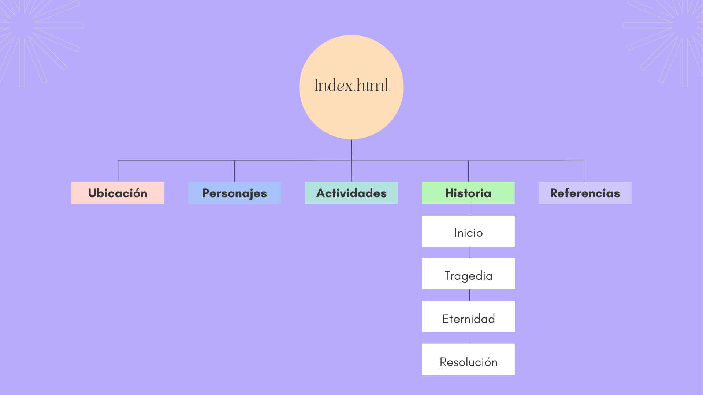

INAZUMA
Ubicación
Personajes
Actividades
Historia
Referencias
Referencias
My campus unal curso Gráfica Interactiva
W3Schools Web
Geshin Impact Game Website
Hoyoverse Lab
Geshin Impact Fandom no Official
Las imagenes utilizadas son extraidas del juego de Geshin Impact
